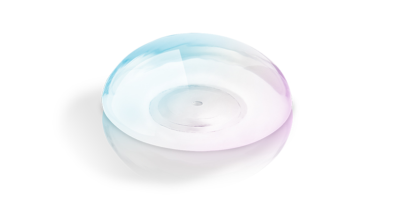
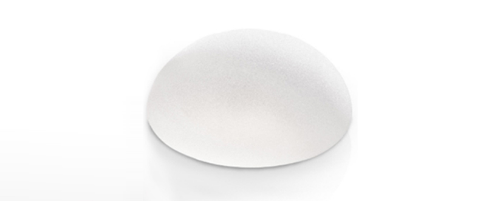

English
English
 繁體中文
繁體中文

會點進來這篇，相信你已經做好初步選擇，要往「果凍矽膠隆乳」的方向前進，但還不了解隆乳材質、種類的差異。（若你還搞不清楚自體脂肪隆乳與果凍矽膠隆乳的差異，請先回頭看 自體脂肪隆乳跟果凍矽膠隆乳差在哪？我適合哪一種？－手術優缺點、擺放部位、費用全解析！）
市面上的果凍矽膠隆乳選擇這麼多，沒有實際放到體內，怎麼挑選最適合我的材質？
在解決這個疑問前，你要先預設，做完隆乳手術後，期待看到什麼成果？有人想要胸部看起來堅挺，有人想要擬真程度高，有人最重視實際摸起來的觸感是否自然。
魔滴、柔滴、曼陀都是市面上常見的隆乳材質，但在選擇品牌前，先在心中思考自己最終想要的成果。確定好答案後，就可以知道哪種隆乳材質最適合自己。
這邊簡單介紹一下，常見的隆乳材質，主要分為鹽水袋和果凍矽膠2種：
鹽水袋內含無菌生理食鹽水，好處是萬一發生破裂，不會對人體造成危害，但缺點就是滲漏率高，有莢膜攣縮的問題。因為它是最早使用隆乳材質，外觀與觸感相對來說都比較不自然，目前幾乎沒有人會選擇鹽水袋。
－外觀
果凍矽膠的外觀主要分為「圓盤型」和「水滴型」，其中又有「光滑面」和「絨毛面」的差異。
圓盤型有光滑面與絨毛面兩種材質，填充的矽膠較柔軟，不需考慮放置的定位，但術後需按摩至少6個月，優點是可以得到較豐滿的胸上緣。
水滴型比圓盤型的矽膠更緊密結實，只有絨毛面材質，經過特殊設計，必須放置正確定位，不可上下顛倒，術後也不可按摩。另外，手術剝離的空間也不可預留過多，避免假體滑動或旋轉錯位。優點是無論平躺或站立，都會呈現自然的水滴狀。
光滑面的優點是滑動性較高，觸感最自然且柔軟，具有波彈感。不過缺點是容易移位，且術後需按摩，避免產生莢膜，嚴重恐導致乳房位移。
絨毛面的優點是貼合度高，不容易產生莢膜，術後也無需按摩，但因為材質相較來說比較厚，觸感會比光滑面差一點。但因為有術後不用按摩的優點，還是滿多人會選擇絨毛面材質。
不過，身材偏瘦的人，因皮膚薄、乳腺組織少，選用絨毛面材質容易透出皮膚，假體的輪廓會比較明顯，反而更推薦選用光滑面材質。但整體來說，無論選擇的外形如何，都有觸感柔軟、自然美觀的特點，且不會滲透、蒸發，不影響哺乳，可大體積填充，滿足一次提升多個罩杯的需求。
－材質
台灣市面上常見的果凍矽膠隆乳材質有Motiva魔滴、Sebbin柔滴和Mentor曼陀。
優點
Motiva 魔滴
是100%無空隙填充，加上採用絨毛面材質，假體填入後能和皮膚高度吻合，幾乎不會有皺褶問題，且術後不用頻繁按摩，莢膜攣縮率最低，安全性最高。
特別的是，魔滴膠體能在地心引力的改變下有不同形狀，站立會呈現水滴自然下垂狀，躺下時會散開呈圓盤狀，符合人體工學效果。另外，廠商承諾提供10年保固，期間若有破裂或發生3～4度莢膜，可免費換新。
缺點
因為是100%無空隙填充，柔軟度會比光滑面材質差，觸感與真實胸部相比，會Q彈一點。再來是有多項專利，加上廠商提供10年保固，費用最昂貴。
優點
Sebbin柔滴 是法國最新研發出來的義乳材質，介於光滑面與絨毛面之間，表面是微紋理圓形乳腺，能降低莢膜攣縮的機率。另外，因柔滴膠體並非100%填充，柔軟度最高，甚至比光滑面的材質更柔軟，最接近自然胸部的觸感。
缺點
柔滴雖然有最好的柔軟觸感，但莢膜攣縮的機率比起魔滴高。另外，因柔滴膠體非100%填充，且內聚力低容易塌陷，容易形成水波紋，若體重太輕、皮下脂肪太少，水波紋會更明顯，但不需過度擔心，皺褶的問題可藉由自體脂肪補胸來解決。
優點
Mentor 曼陀
最大優勢為親民的價格，如果在意柔軟度，曼陀光滑面的觸感介於柔滴跟魔滴之間，如果在意莢膜攣縮率，選擇曼陀絨毛面、水滴型，莢膜攣縮率都比柔滴還要低。曼陀經濟實惠的價格，又能符合絕大多數人的需求，是在市場上頗受歡迎的原因。
曼陀光滑面適合胸部組織足夠者，自然柔軟、接近真實胸部觸感，能擠出自然的乳溝。手術切口可從腋下、乳房下緣或乳暈放入，和水滴型相比，手術疤痕較小。
曼陀水滴型能與身體組織緊密結合，術後不易位移，且莢膜攣縮率低，不太需要按摩。無論是平躺或站立，都能呈現最自然的乳房樣貌，特殊水滴型的設計，提供更柔順的上胸曲線。曼陀水滴型擁有169種規格，可量身訂做自己的完美胸型。
缺點
曼陀光滑面不適合胸部組織不足、一次增加多個罩杯者，因皮膚會過於緊繃，容易產生水波紋。另外，曼陀光滑面雖然有較高的柔軟度，但不易與皮膚貼合，術後需頻繁按摩，避免莢膜攣縮。
曼陀水滴型觸感偏硬、較Q彈，在身上幾乎不會晃動，也不容易擠出乳溝。針對B罩杯以下者，也不適合做曼陀水滴型，和光滑面相比，水滴型的手術切口較大，術後恢復期也較長。
回到一開始的問題，觸感、彈性柔軟度、外形、莢膜攣縮率都是選擇隆乳材質的考量因素。
若想要胸形線條自然，柔軟度適中、莢膜攣縮率低、價格便宜，曼陀水滴型就是不錯的選擇。想要自然柔軟的胸部觸感、希望擠出自然乳溝，術後願意按摩，且預算沒那麼充足者，可以選擇曼陀光滑面。
單純偏好柔軟且接近真實胸部的觸感，不考慮莢膜攣縮發生的機率，可以選擇柔滴，不過要特別提醒，若本身皮下脂肪較少，術後有機率出現水波紋的情況，需做自體脂肪補胸來解決皺褶問題。（延伸閱讀：我適合自體脂肪隆乳嗎？如何提升脂肪存活率？）
完全不能接受莢膜攣縮，願意降低一點對觸感的要求，但安全性高、手術切口小，魔滴就是最好的選擇，不過價格最昂貴。另外，因魔滴100%填充的方式，球形膠體的輪廓會比較明顯一點。
因果凍矽膠觸感柔軟、接近真實胸部的觸感，受到不少人青睞，但無論是魔滴、柔滴還是曼陀材質，只要放在體內，多少都會隨著時間耗損，若不幸發生破裂、滲漏時，就必須做更換。在選擇隆乳材質之前，務必和專業醫師討論，選擇比較不易滲漏的材質，提升自信心的同時，又能確保隆乳安全。